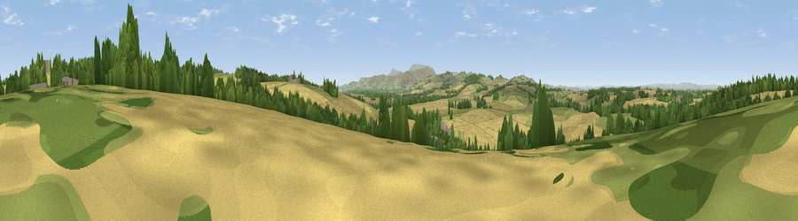

Viewpoint near Etal
#24012 in England · top 75% of its area beats it · near EtalWhere it is
The exact computed spot (NT 93525 38925). Click the marker for map links.
The view, rendered

A 360° render of this exact spot computed from the terrain model, tree cover and land cover — summer colours, afternoon light, calibrated against photographs of famous viewpoints. Real trees, hedges and buildings will differ in detail.
The panorama
Grey silhouette: terrain skyline in each direction (720 bearings, Earth curvature and refraction included). Dashed green: skyline with trees (+15 m) and buildings (+8 m) as obstacles. Blue strip: how far the ground is visible on each bearing.
Where the view opens
Wedge length = distance to the farthest visible ground on that bearing (vegetation-aware). Rings at 10, 25 and 50 km.
What fills the view
50% cropland · 35% grassland · 15% woodland · 1% built-up
Angular shares of the visible panorama (visual magnitude), not map area. Landscape diversity 0.45 (0–1 Shannon).
Key numbers
More beautiful places nearby
The staircase of upgrades: each row has a higher view potential than everything closer. Driving times are estimates from straight-line distance, calibrated against real road routing — check an actual route before setting out.
| Place | Direction | Drive | Score |
|---|---|---|---|
| viewpoint – just north of Hay Farm | E · 1 km | ~4 min | 58.3 |
| Viewpoint near Etal | NNE · 1 km | ~4 min | 66.5 |
| Viewpoint near Etal | NE · 2 km | ~4 min | 72.1 |
| Viewpoint near Ford | ESE · 4 km | ~8 min | 74.9 |
| Viewpoint near Milfield | SSW · 6 km | ~12 min | 77.4 |
| Kypie Hill | SSW · 6 km | ~13 min | 80.3 |
| Housedon Hill | SSW · 7 km | ~14 min | 80.5 |
| Moneylaws Hill | SW · 8 km | ~15 min | 83.0 |
55.64383, -2.10443 · source: screening · position refined by local search. Computed location — check access rights before visiting.